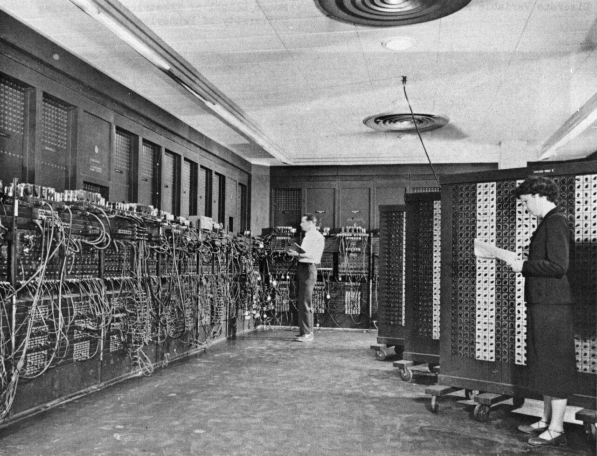

만든 사람들
사랑하는 아들을 위해 만들었습니다.
| 초안 | Jedi Kim |
| 수정 | Codex |
| 감수 및 퍼블리싱 | Claude |
- Jedi Kim — LinkedIn · jedikim.com
- GitHub — jedikim/cs-foundations
저작권#
CC0 1.0. 누구나 자유롭게 복사하고, 고치고, 배포할 수 있습니다. 사진은 아래 표의 라이선스를 따릅니다.
사진 출처#
| 사진 | 제목 | 저작자 | 라이선스 | 출처 |
|---|---|---|---|---|
 | 도서관 카드 목록 서랍 | Marcus Gossler | CC BY-SA 3.0 | 원본 |
 | CPU 칩 (Intel Core i7-6700K) | Eric Gaba | CC BY-SA 4.0 | 원본 |
 | ENIAC을 조작하는 모습 | U.S. Army (작자 미상) | Public domain | 원본 |
 | 이더넷(랜) 케이블 | David Monniaux | CC BY-SA 3.0 | 원본 |
 | 광섬유 케이블 단면 | Asurnipal | CC BY-SA 4.0 | 원본 |
 | 1947년 기록에 붙은 최초의 컴퓨터 버그(나방) | U.S. Naval Historical Center | Public domain | 원본 |
 | 그래픽카드 | TheStriker | CC BY 4.0 | 원본 |
| 아폴로 유도 컴퓨터 소스 코드 출력물과 마거릿 해밀턴 | Draper Laboratory, 복원 Adam Cuerden | Public domain | 원본 | |
 | 덮개를 연 하드디스크 | Evan-Amos | CC BY-SA 3.0 | 원본 |
 | 노멀 맵 적용 예 | Julian Herzog | CC BY 4.0 | 원본 |
 | 데스크톱 본체 내부 | Bretwa | CC BY-SA 4.0 | 원본 |
| 화면 픽셀 확대 | Pengo | CC BY-SA 3.0 | 원본 | |
 | IBM식 천공 카드 | Gwern, agr | Public domain | 원본 |
 | DDR4 RAM 모듈 | ElooKoN | CC BY-SA 4.0 | 원본 |
 | 라즈베리 파이 4 | Laserlicht | CC BY-SA 4.0 | 원본 |
| 데이터센터의 서버 랙 | Victor Grigas | CC BY-SA 3.0 | 원본 | |
| 항구에 쌓인 화물 컨테이너 | AgainErick | CC BY-SA 4.0 | 원본 | |
 | M.2 NVMe SSD | D-Kuru | CC BY-SA 4.0 | 원본 |
 | 세계 해저 통신 케이블 지도 | Greg Mahlknecht(케이블 자료), OpenStreetMap 기여자(지도) | CC BY-SA 2.0 | 원본 |
 | 텔레타이프(Model 33)와 알테어 8800 컴퓨터 | Tim Colegrove | CC BY-SA 4.0 | 원본 |
 | 유타 주전자 3D 모델 | Dhatfield | CC BY-SA 3.0 | 원본 |